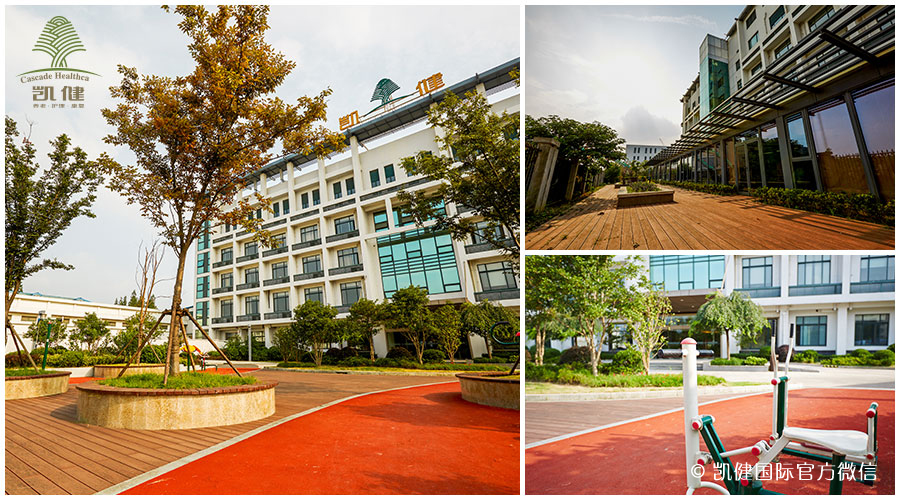
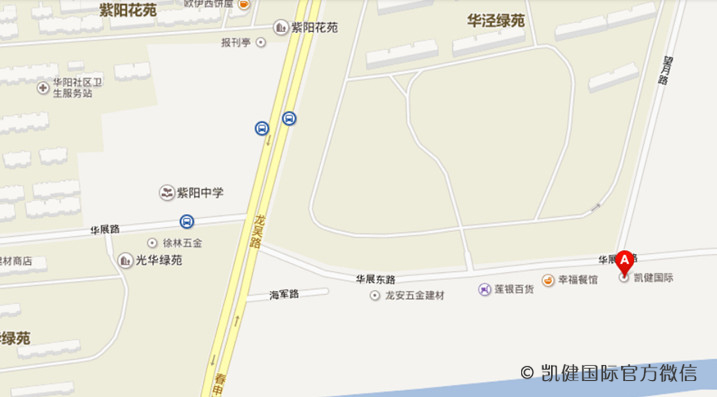
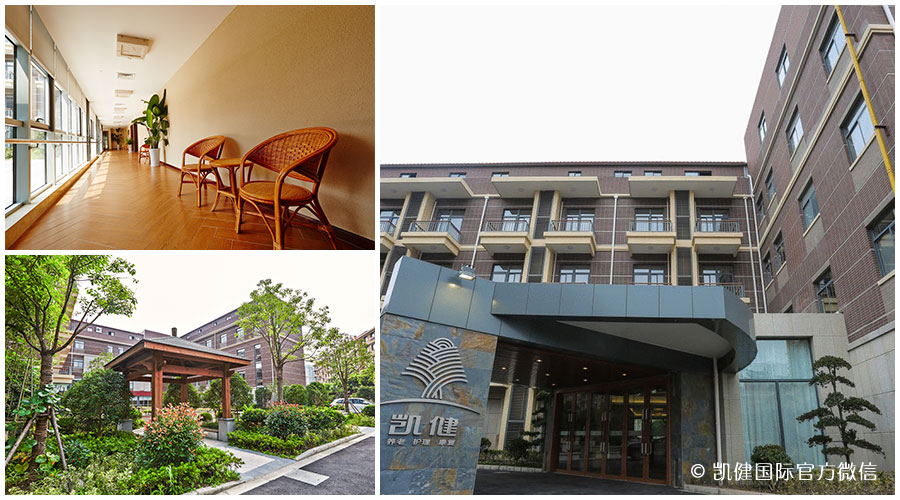
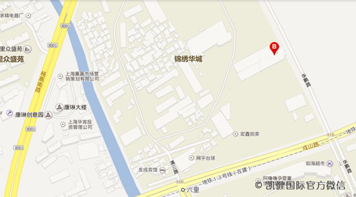
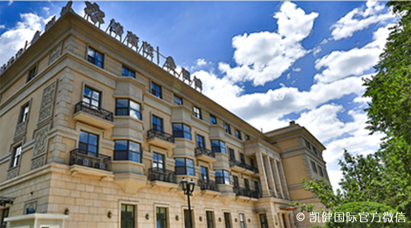
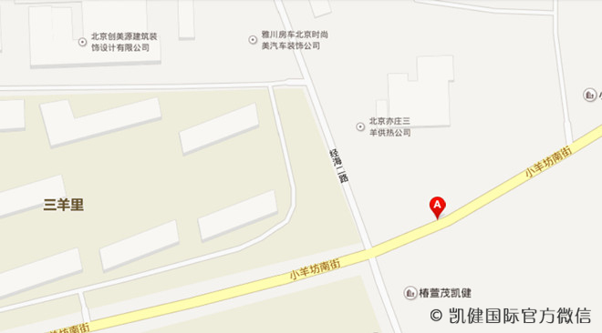
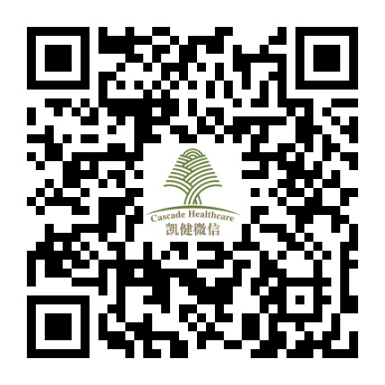

【凯健国际•徐汇苑】

坐落于徐汇滨江板块生态景观段，紧邻总规划近百公顷的生态公园。
咨询热线：400-878-0388
网址：www.kaijiancare.com
地址：徐汇区华展东路33号（近龙吴路）
公交路线：
• 地铁3号线龙漕路2号出口乘坐956路/958路/178路/770路，在龙吴路华展路站下车，步行约550米到达目的地

点击地图，进入百度导航
【凯健国际•浦东苑】

坐落于浦东世博辐射圈高端社区内，邻近生态湿地景观及大型运动公园。
咨询热线：400-878-0388
网址：www.kaijiancare.com
地址： 浦东新区华鹏路96号(近成山路)
公交路线：
• 地铁7号线锦绣路2号出口乘坐976路/992路/184路，在北艾路杨高南路站下车，步行约200米到达目的地
• 乘坐988路/隧道一线，在成山路杨高南路站下车，步行约550米到达目的地
• 乘坐607路，在成山路浦三路站下车，步行约150米到达目的地
• 乘坐976路，在北艾路杨高南路站下车，步行约630米到达目的地
地铁路线：
• 乘坐地铁6号线（港城路方向），在东明路站下车(1号口出)，步行约1600米到达目的地

点击地图，进入百度导航
【北京椿萱茂•凯健（亦庄）】

坐落于北京东南部远洋地产高端住宅项目远洋天著别墅社区内。
咨询热线：400-086-3377
地址：北京市大兴区亦庄镇经海二路与小羊坊南街交界处
公交路线：
• 乘坐986路/974路/605路/820路，在小羊坊站下车，步行约600米到达目的地
• 乘坐997路，在亦庄工业园区站下车，步行约300米到达目的地

点击地图，进入百度导航
欢迎大家扫描下方二维码或者搜索"凯健护理"关注凯健国际官方微信平台。与我们一起感受专业的康复护理服务，尽享美好生活。
